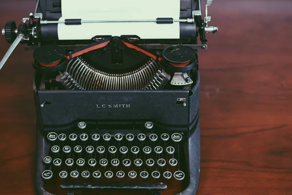
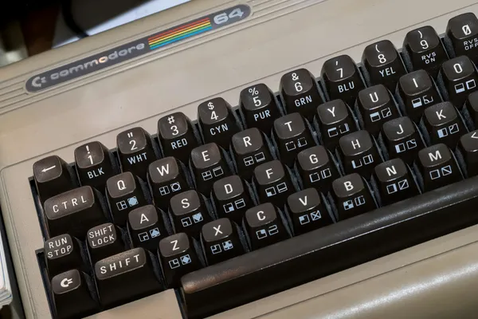
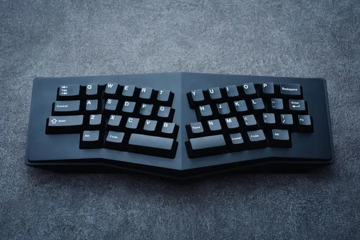

1. The Early Writing Machines
The journey of the keyboard begins with the invention of the typewriter in the 19th century. Typewriters allowed for mechanized writing, speeding up document creation and standardizing written communication.
The first commercial typewriter was introduced in 1874 by Christopher Sholes. It used a layout we now call QWERTY, designed to prevent jamming by spacing out frequently used letters.
2. The Transition to Electric Keyboards
In the mid-20th century, electric typewriters started to gain popularity, offering faster typing and improved accuracy. These machines paved the way for computer keyboards as we know them today.

Electric typewriters used fewer mechanical parts, replacing the typebars with electric circuitry. IBM's Selectric typewriter was a revolutionary design, featuring a 'golf ball' head to print letters.
3. The Arrival of the Computer Keyboard
With the rise of personal computers in the late 20th century, the keyboard evolved to serve a new purpose. The first computer keyboards were based on teletype machines, but quickly adapted for modern computing needs.
The layout largely remained the same as the typewriter’s QWERTY design, but additional keys like function keys, escape, and control were added for greater utility.
4. Modern Ergonomic Keyboards
In the 21st century, the need for comfortable and health-conscious keyboards led to the creation of ergonomic designs. These keyboards aim to reduce strain on the hands and wrists for long-term use.
Ergonomic keyboards feature a split layout, contoured shapes, and other innovations to promote a more natural typing position.